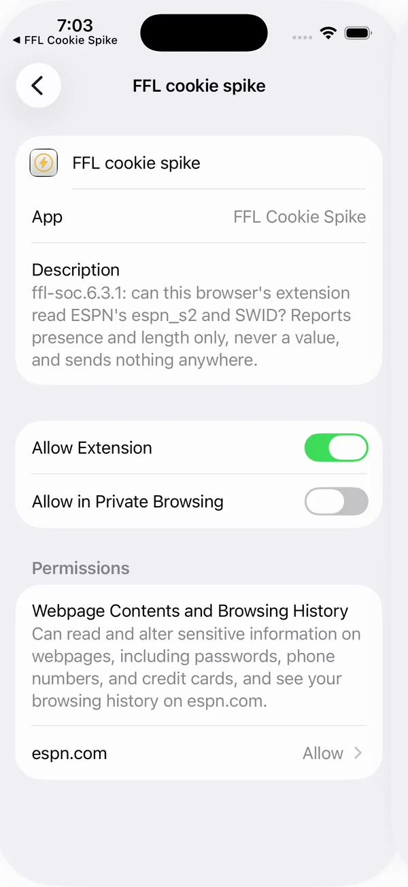

The extension is off
The extension is on

Come back here any time to check the extension is still on.
The extension is off
The extension is on
Turn on FFL in Safari’s Extensions settings.
In Safari Settings › Extensions, turn on FFL. Then open FFL in Safari, sign in, click the FFL icon in the toolbar and allow it on FFL’s site, and click Connect this browser. Allow it on espn.com when Safari asks.